在上一集能量的故事的开头，我们画了一个大的蓝色的圈，象征着一个最大的集合，今天我们开始讲汽车的故事，我们可以看到在蓝色的大圈里面画了一个绿色的小圈，表示我们将进一步探讨一个更加具体的领域，好吧，那就开始吧。
能量的故事
汽车的故事
特斯拉的故事
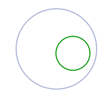
没想到吧，世界上第一个拥有汽车的人竟然是我们的康熙大帝。
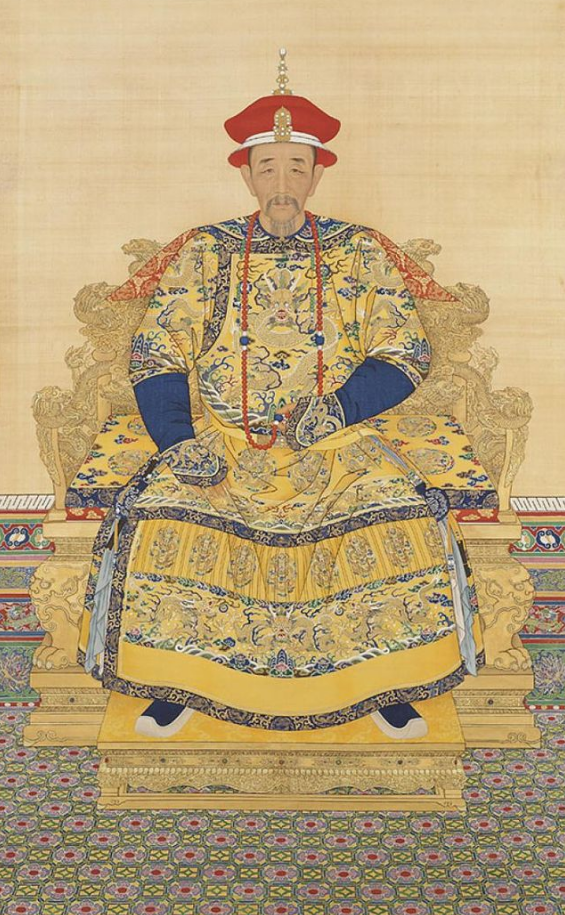
1672年，当康熙还是18岁的时候，比利时传教士南怀仁给他制造了世界上第一辆汽车。
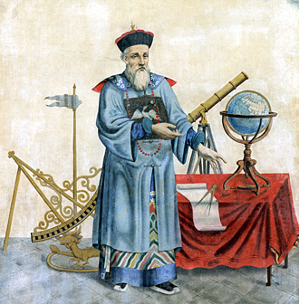
上面这幅画像是在南怀仁还没有想好自己的手应该怎么放的时候画师就已经画好了。南怀仁的一生基本上是在中国度过的，1670年在一场谁能推算出更准确的历法的竞争中南怀仁取得了胜利，并开始担任帝国的首席数学家和天文学家，他是康熙皇帝的科学启蒙老师，精通天文历法、擅长铸炮，是当时国家天文台（钦天监）业务上的最高负责人，官至工部侍郎，正二品。那个时期南怀仁还进行了很多发明创造，其中有一项就是下面这个给康熙的玩具，世界第一辆汽车：
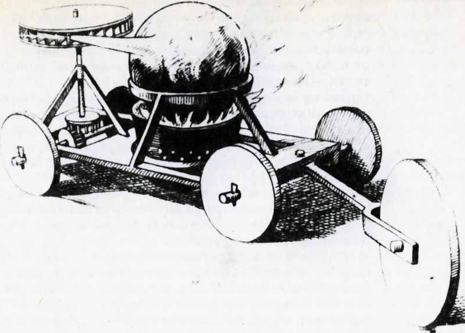
这辆车还没有足以大到可以坐进一个司机，但是这种通过燃烧沸水产生的蒸汽来带动推动齿轮从而带动车轮运动的装置，可以说是世界上第一台可以自己运动的汽车。
南怀仁的汽车在当时可谓是世界一流的，直到1769年，法国陆军工程师尼古拉·约瑟夫·居纽（Nicolas-Joseph Cugnot）在此基础上加入了司机的座位，从而制造出第一辆蒸汽机驱动的汽车。
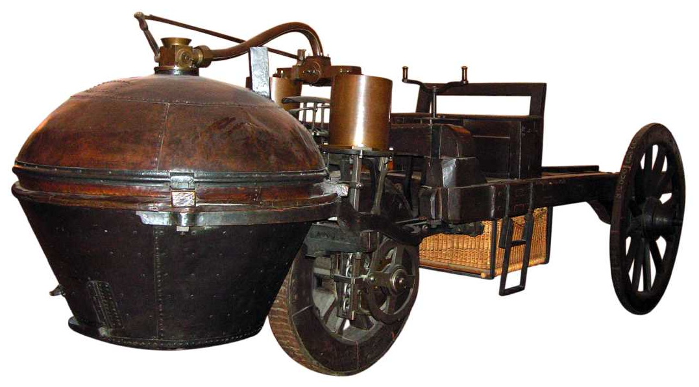
接着出场的是下面这位：
1807年，弗朗索瓦艾萨克德（ François Isaac de Rivaz）发明了世界上第一台内燃机并且发明了基于这种内燃机的汽车：
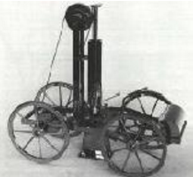
一般蒸汽机的原理是在引擎外部燃烧加热引擎内部的蒸汽以提供动力，这种称为外燃机，而内燃机顾名思义就是在引擎内部进行燃烧产生动力。
不过直到1886年，真正意义上的可以方便驾驶的汽车才由德国工程师卡尔·本茨（Karl Benz）和他的妻子贝尔塔·本茨（Bertha Benz）制造出来：
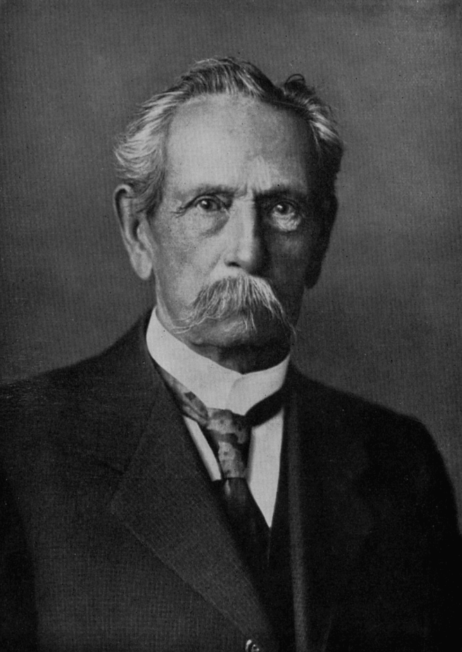
他们所发明的下面这辆汽车被认为是第一辆真正意义的汽车：奔驰-Motorwagen。
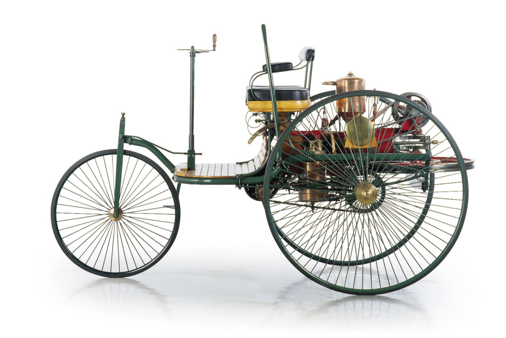
这辆车的造价是1000美金，相当于今天的26248美金，它有三个轮子，由原始的内燃机驱动。
几年后，在美国的密歇根州有个名叫亨利福特的小男孩觉得一直在自己家的农场里当农民实在是太无趣了，于是决定外出找工作，当时托马斯爱迪生的公司正积极的在美国各大城市推广他们的电力系统，年轻的福特就找了一份在爱迪生的公司可以接触到蒸汽机的工作。在他的空余时间，福特在他的住处就开始捣鼓一些在当时看来还是很新潮的内燃机技术，到他32岁那年，1896年，福特制造出了第一台内燃机驱动的汽车，他自己称之为福特四轮车。
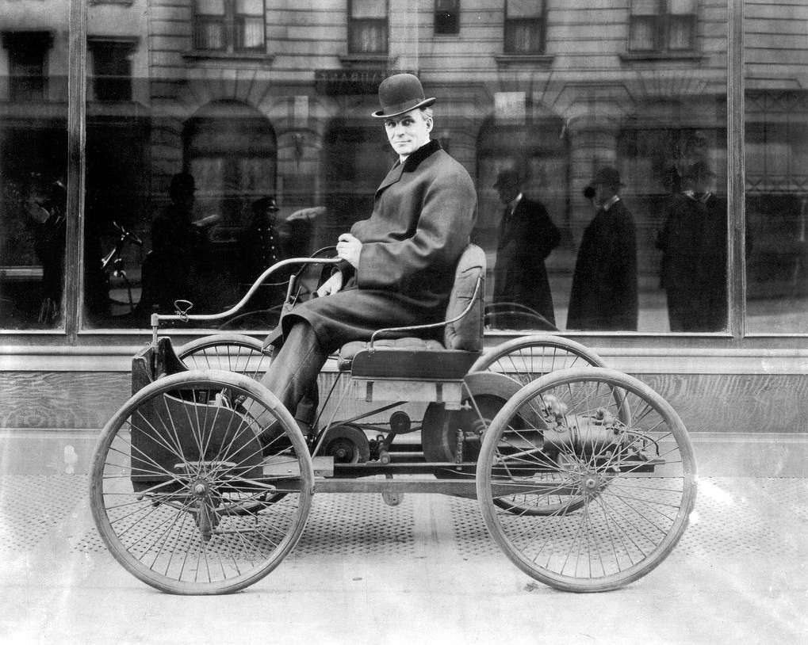
基于对汽车的痴迷，1899年福特辞去了原本的工作，开始自己创业，在1901年创立亨利福特公司之前，创立过底特律汽车公司，不过后来失败了。不久之后由于和公司投资方之间的矛盾福特离开了公司，而亨利福特公司也就此改名为凯迪拉克汽车公司。1903年福特和他的搭档亚历山大马尔科森一起又他办了福特&马尔科森公司，这家公司就是之后的福特汽车公司。
福特和他的公司致力于推广燃油汽车，这项技术在当时并不是很普遍。汽车本身就是个新兴事物，在那时的美国市场40%的汽车是蒸汽驱动的，38%是电力驱动的，而燃油驱动的仅有22%。这个占比在当时是可以理解的，毕竟基于蒸汽机的外燃机来提供动力在当时已经是一个比较成熟和广为接受的最常见的技术，而新兴的内燃机技术正在逐渐的兴起，但是发展最快的还是电动车，可以想象在1900年电是一个多么先进的技术。
19世纪60年代到19世纪末这三十几年间，由托马斯·爱迪生，特斯拉，亚历山大·格雷厄姆·贝尔和乔治·威斯汀豪斯等一些发明家带来的电力革命使得世界发生了翻天覆地的变化。第一件神奇的变化就是电报的发明，使得人们可以实现远距离的沟通，1866年第一封跨越大西洋的电报发送成功，使得欧洲和美国之间可以实现即时的沟通。这场电力革命在19世纪70年代开始了大的爆发，电话的发明，留声机的发明，电灯的发明，直到1896年，城市电网可以把电力带到千家万户，同样是1896年，原始的电影在纽约放映，1900年无线电发明，此时街上已经几乎看不到马车了，取而代之的都是汽车，仅仅几年后，1903年，莱特兄弟的飞机第一次试飞成功。这一段时间科技的发展实在是太酷了。
如果你是从1900年一直生活至今，你可以感觉今天科技的发展和那个时期是类似的，电脑、手机的发明正如当时电力、汽车等的发明，而当时的爱迪生，特斯拉等人特或许就是当今的比尔盖茨和乔布斯。在那时火车作为运输工具也已经出现差不多100年了，在1900年的人看来用火车头运输就像我们现在看黑白电影似的。1900年的时候人们不怎么在乎化石燃料所可能带来的一系列问题，在持续不断的燃料了百年之后，人们其实一直在考虑使用更清洁更可控的能源–电力。
所以如果让1900年的人们打赌未来什么样的汽车动力是趋势的话，在外燃机，内燃机和电动机之间选择，他们一定会把钱押在电动机上。当时世界上的著名发明家包括爱迪生和特斯拉等人都十分看好未来电动汽车的出现，在20世纪初，纽约时报也援引相关报道称电动车比普通使用汽油的汽车更清洁更安静和更经济。
但是人们对于电动车的理想并不能驱动当时的汽车工业。汽车在当时只不过类似于富人的工具。他们认为首先应该着眼于让汽车变得更快，更坚固和更经济。于是当时的资本和技术都在朝着这样的方向努力着。1908年，在福特和他的公司成立五年后，他们推出了革命性的产品，Model T。
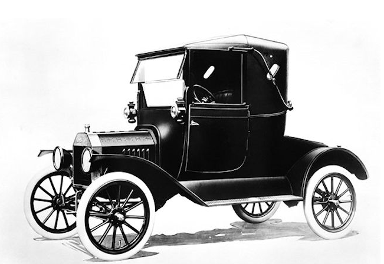
在Model T诞生之前，所有的汽车不论是电动的还是燃油的都存在着严重的缺陷。电动车的行驶里程短而且充电所需要的时间长(这个问题貌似到现在也还依然存在)，燃油车噪声很响，不容易发动而且排放出大量的黑色废气。
福特不愧为一个厉害的实业家，他通过改进生产制造流程，引入了生产线的加工方式来代替传统的手工制造，使得汽车的制造成本大幅降低，从而生产出了普通老百姓也可以接受的汽车。1912年工程师Charles Kettering发明了电动起动装置，人们再也不需要像个呆逼似的用手摇的方式来发动汽车了，而新发明的消声器可以显著的降低燃油车的噪音。基于这些改进，之前提到的燃油车的问题几乎都得到了比较完美的解决，而且又比电动车便宜好多。于是福特的Model T迅速攻占了美国市场，到1914年的时候，美国99%的汽车都是燃油车，到1920年的时候人们就几乎见不到电动车了。
燃油车的普及实际上并不是发展的最终结果，未来更清洁更安全的汽车正在迅速发展起来，燃油车注定会成为历史，电动车势必会是未来趋势。福特当时所做的只不过是通过技术手段和商业动作在一定程度上规避了燃油车表面上的缺点并降低成本从而可以使得其快速的占领市场而得到普及，而电动车的发展仍然处于瓶颈斯，所以一直以来停滞不前。
现在一个世纪过去了，方便快捷的智能手机已经取代了原先的有线电话，皮克斯公司所擅长的高仿真3D电影已经取代了原先的无声黑白电影，科学家们从原始的在实验室里进行简单的物理化学实验发展出了今天的大型原子对撞机，莱特兄弟12秒120英尺的飞行现如今已经发展为远在250英里外的国际空间站。
假如我们是从1900年一直活到现在的人，我们很和可能依旧觉得电动车才是王道，因为内燃机只不过是对100年前蒸汽机的简单改进，而电动机才是真正的前卫的科技。但是我们并没有从1900年一路过来，而是直接面对着马上路的汽车都在使用的所谓的现代燃油机的时代，几个活塞做着无聊的往复运动：

相比上面提到的科技在其它领域的发展，燃油机的这种运作方式实在是太原始了。
简单的普及一下现在汽车燃油机引擎内部的工作原理吧：
汽油发动机是以汽油作为燃料，将内能转化成动能的的发动机。由于汽油粘性小，蒸发快，可以用汽油喷射系统将汽油喷入气缸，经过压缩达到一定的温度和压力后，用火花塞点燃，使气体膨胀做功。汽油机的特点是转速高、结构简单、质量轻、造价低廉、运转平稳、使用维修方便。汽油机在汽车上，特别是小型汽车上大量使用。
主要结构：
机体
是发动机各部机件的装配基体。它包括气缸盖、气缸体、下曲轴箱（油底壳）。气缸盖和气缸体的内壁共同组成燃烧室的一部分。机体的许多部分又分别是其它系统的组成部分。
曲柄连杆机构
是发动机借以产生并传递动力的机构，通过它把活塞的直线往复运动转变为曲轴的旋转运动而输出动力。它包括活塞、活塞销、连杆、带有飞轮的曲轴和气缸体等。
配气机构
包括进气门、排气门、气门挺杆和凸轮轴及凸轮轴正时齿轮（由曲轴正时齿轮驱动）等。它的作用是使可燃混合气及时充入气缸并及时从气缸排出废气。
燃料供给系统
汽油机燃料供给系统包括汽油箱、汽油泵、汽油滤清器、空气滤清器、化油器、进气管、排气管、排气消音器等。其作用是把汽油和空气混合成合适的可燃混合气供入气缸，以备燃烧，并将燃烧生成的废气排出发动机。
冷却系统
主要包括水泵、散热器、凤扇、分水管和气缸体以及气缸盖里的水套。其功用是把高热机件的热量散发到大气中去，以保证发动机正常工作。
润滑系统
包括机油泵、限压阀、润滑油道、集滤器、机油滤清器和机油散热器等。其功用是将润滑油供给摩擦件，以减少它们之间的摩擦阻力，减轻机件的磨损，并部分地冷却摩擦零件，清洗摩擦表面。
起动系统
包括使发动机的起动机构及其附属装置。
工作原理：
发动机是将化学能转化为机械能的机器，它的转化过程实际上就是工作循环的过程，简单来说就是是通过燃烧气缸内的燃料，产生动能，驱动发动机气缸内的活塞往复的运动，由此带动连在活塞上的连杆和与连杆相连的曲柄，围绕曲轴中心作往复的圆周运动，而输出动力的。
四冲程汽油机的工作过程是一个复杂的过程，它由进气、压缩、燃烧膨胀、排气四个行程（冲程）组成。
进气行程
此时，活塞被曲轴带动由上止点向下上止点移动，同时，进气门开启，排气门关闭。当活塞由上止点向下止点移动时，活塞上方的容积增大，气缸内的气体压力下降，形成一定的真空度。由于进气门开启，气缸与进气管相通，混合气被吸入气缸。当活塞移动到下止点时，气缸内充满了新鲜混合气以及上一个工作循环未排出的废气。
压缩行程
活塞由下止点移动到上止点，进排气门关闭。曲轴在飞轮等惯性力的作用下带动旋转，通过连杆推动活塞向上移动，气缸内气体容积逐渐减小，气体被压缩，气缸内的混合气压力与温度随着升高。
作功行程
此时，进排气门同时关闭，火花塞点火，混合气剧烈燃烧，气缸内的温度、压力急剧上升，高温、高压气体推动活塞向下移动，通过连杆带动曲轴旋转。在发动机工作的四个行程中，只有这个在行程才实现热能转化为机械能，所以，这个行程又称为作功行程。
排气行程
此时，排气门打开，活塞从下止点移动到上止点，废气随着活塞的上行，被排出气缸。由于排气系统有阻力，且燃烧室也占有一定的容积，所以在排气终了地，不可能将废气排净，这部分留下来的废气称为残余废气。残余废气不仅影响充气，对燃烧也有不良影响。
排气行程结束时，活塞又回到了上止点。也就完成了一个工作循环。随后，曲轴依靠飞轮转动的惯性作用仍继续旋转，开始下一个循环。如此周而复始，发动机就不断地运转起来。
我们不得不承认现在汽车里用的汽油发动机是挺先进的，但是当我们把下面这两幅图作个简单的对比的话我们会发现已经过去了200年了，它们看起来还是如此的相似。
1815年的最早的火车头的发动机：
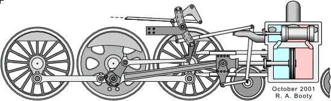
2015年的汽油发动机：

在气缸里通过热能推动活塞往复运动，然后通过连杆带动车轮，最后还会排放出大量的废气，这种技术看上去就是一个很老很原始的技术，但是不可思议的是直到今天我们仍然在使用这样的技术。我们或许已经习惯了它的存在，习惯了我们所生活的社会，但是有时候有对比的将历史仔细的研究一下我们就会发现是不是有一些不对劲的地方？我们不禁要问一个为什么呢？
既然人们都早已意识到电动车才是未来的趋势，都觉得电动车所能带来的安静，清洁的体验才是人们理想的汽车，为什么我们放弃了它呢？在1900年的时候无论是电动车还是燃油车都没有得到普及，都需要有关键的技术突破，而率先实现技术突破的是燃油车。但是为什么在此之后人们就停留在了燃油车这个原始的技术之上了呢？何况伴随着燃油车还带来了一系列环境问题。进入20世纪以来人们在科技上的发展已经足以通过66年就从12秒的短暂飞行发展到登陆月球，而在电动机的发展上为什么没有制造出容量够大充电够快的电池和行驶里程够长的电动汽车呢？为什么这项和人类生活息息相关的科技的发展似乎是停止的呢？
这个问题其实和之前能源的故事里需要解决的问题类似，美国第一所发电站是1882年爱迪生建造在曼哈顿的珍珠街电站，当时电力的来源是靠烧煤，而现如今烧煤仍然是人们电力的主要来源，即便是我们已经知道这不是一个可持续发展的长远的方法，在上一篇能量的故事中我们已经提到了烧煤所引发的环境问题已经煤矿本身是会用尽的，那么为什么我们还在使用这种原始的方法？
与其把问题定义为：为什么某项科技停止了进步？我们不如把问题重新定义为：为什么某项科技的进步没有发生？之所以前一个定义不是很科学是因为这会让人们直观的觉得科技的进步是自然而然应该发生的，而事实并非如此，科技的进步必然有着在其背后推动的大手。
同样的认识上的局限性有时候也出现在我们对自然演进的认知上，事实上自然选择并不会像我们直观上认识的那样让事物变得更好，它只是从生物学的角度让事件变得更适应当下的环境。当一个物种突然变异得更快更生猛，那么他所捕食的猎物通常就会变得更稀缺，根据旧的环境所优化过的被捕食者的生存环境就变得更加的恶劣，从而也不得不改变自己的生存方式来适应新的环境，久而久之这种新的改变会被刻入基因传递下去。
那么当我们谈到科技的演进时，市场环境对于科技进步的作用就类似于自然环境对于生物演进所起的作用，这种作用是相对自由和开放的，但是不同于物种的演进只依赖于自然环境，科技的演进还依赖于人类的社会的动作方式，比如依赖于政府所带来的一些管理手段。所以我们想要弄清楚科技为什么和如何前进的同时，我们需要同时考虑这两者带来的影响。
1) 政府的作用-诱导环境发生变化
事实上政府的作用和影响力在世界各地有着显著的不同。比如朝鲜的政府就是那种无所不能的全宇宙最强的圣经式的无处不在的权威，斯堪的纳维亚的政府就你是一个温柔的母亲让其子民依偎在她温暖安全的怀里，而非洲中部的一些政府就是为那些富有的家族所服务的。
在美国，政府充当的角色有些微妙了，一方面作为世界第一大国有着自我的优越感，另一方面又非常希望可以保持并做得更好。美国政府的影响力主要来自三个方面：资金，政策和税收。
资金：政府的资金往往被用来支持国家的重大事项，对于一个民主的国家一般来说只有当大部分人都同意的时候某个重大事项才得以获得政府资金的支持。正如上世纪60年代，美国人人都像打了鸡血似的支持把人送上月球，同样对于军费的巨额资金投入也得到了选民的支持，这些政府资金的投入都对特定行业的发展起到了至关重要的作用。然而并不是所有国家都能作出统一的意志行动，在多数分裂的国家政府无法集中优势资源来开展重大事项的研究，因而这种情况往往会导致科技的停滞。
政策：一个民主统一国家的政府的另一项重要能力就是自定法律法规，进行一些政策上的限制或是扶植。在一些细节方面比如汽车引入安全带和安全气囊一开始就是由政府出台的相关法规强制执行的。但是涉及到整个汽车工业的大局就很难看到有哪些政府的政策起到了绝对作用的例子，比如没有见到哪个政府规定说一定得使用电动车的。
税收：政府往往通过税收手段来对自由市场经济施加一些调节的作用。同样的，这种调节往往也是体现在一些具体的细节上，而无法改变市场的整个大趋势。
显然美国政府在这些手段的应用上已经得心应手，其中财政自由主义者对政府的能力相对于财政保守派持有更乐观的态度。不过大家基本上都认可在政府作用力更加强的前苏联和现在的中国，政府对于科技进步所起的推动作用是更加强大的。不过对于一些科技的创新往往发生在自由开放的民主政体，这个主要就由于第二个原因了：
2) 自由市场经济的影响
在自然界，生物的天性是捕捉食物和远离天敌。所以生物的进化和发展都让各自的基因朝着更有利于这两种情况的方向发生变异。当陆地上的食物变得稀缺的时候，就可能变异出更长的脖子可以摘取更高的食物，甚至进化出翅膀可以捕捉空中的食物。但是这种进化并不是变得更好了，而只是更适合环境了。在生物界优化的定义很简单，因为各自对于要优化的方向和目的的定义都很简单，生物的核心需求就是自我保护和繁殖。因此自然界的优化总是有相同的定义：更好的保护自我和繁育下一代。
为了更好的理解市场经济的优化方向，我们同样也需要知道市场的目标是什么。当然人类作为生物的一种，同样有着自我保护和繁殖的核心目标，我们并不希望我们挨饿受冻，不过人类社会发展到现阶段，这种生理上的底层需求基本上都能够得到满足了，那么我们就需要静下心下思考我们内心深处精神和外在物质享受两方面的需求，市场所优化的方向正是会基于我们人类的需求。
这种需求就会因人而异了，从国家和地区的角度也会因为不同的文化背景而不同，有一些文化对失败的恐惧大过了对财富的贪婪，那么内心的驱动力就不会驱使你去冒着风险来获取一些其它收益。而另外一些文化背景的人们的内心可以又是受着宗教背景，家庭环境等的驱动，向往着一些悠闲的生活和内心精神上的启迪。
上面提到的这些内心的需求或者说是向往都不是科技进步背后驱动力，因为这些心理需求都是相对比较容易满足的，那么究竟人们什么样的心理需求才会引发和推动科技的进步呢？在这里我认为主要有以下两点：
贪婪。在一个完美的公正的开放的市场经济环境下，人们的贪婪是一种核心的驱动力。根据资本主义的基本理论，你创造了更多的市场价值那么你也将赚到更多的钱。所以一些企业为了提高自己的竞争力就会全力的投入以生产出更好的产品或者提供更好的服务，这对他们来说就可以赚更多的钱。个人的一些对于奢华生活享受的贪婪对科技进步所起到的作用并不在个人最终具体想要获得东西上，而是每个人的这种贪婪的想法和欲望就有可能推动科技向前发展。当然贪婪也是一把双刃剑，用的好了，在一个公平的环境下，它可以起到很好的促进作用，用的不好，就会想到相反的作用，比如一个腐败的系统的高层，越是贪婪的话就越有可能为了保持自己的利益而做出一些不正当的事情。
雄心 。贪婪是科技进步的一股驱动力，但是决定科技进步大小的是第二点雄心，做伟大事业的雄心。同样的这种雄心的来源可以是多方面的，有时候是成名的欲望，要在历史上留下自己的印记，有时候这种雄心是一种强烈的改变世界让人类生活更美好的愿景。
在热带雨林里的植物，那些既贪婪又有雄心的大树才会为了争取更多的阳光而不停的向上生长，最后长成参天大树，而那些对阳光有些许贪婪的植物则会满足于可以得到一些阳光就可以了，因此并不会生长的太茂盛。当下面的植物中生长出来既贪婪又有雄心的品种的时候，这种植物会想方涉法的伸展自己的枝叶，向上不行就试一试向两边发展，两边遇到瓶颈以后再试一试向上发展，认准目标就是要得到更多的阳光，那么就会创新出新的生长方式，而当其枝叶已经盖过之前的老大哥的时候，老大哥如果依旧保有贪婪之心和雄心壮志，那么他也会继续以同样的方式来抢夺资源，最终我们所看到的就是整个雨林的繁荣景象。同样的事情在商场上也在发生着，当2007年苹果公司推出其大屏幕触摸智能手机之后，就被迫使的别的公司也进一步改进自己的手机，有的公司做到了并发展了过来比如三星，而有一些并没有，比如诺基亚。
在了解了以上两个影响科技发展的主要原因后，我们再回到一开始的问题：
为什么汽车工业在过去的一个世纪里没有本质上的发展呢？
我这里总结两个主要在原因：
1) 汽车行业的准入门槛太高了。
试想一下要创办一家汽车公司有多难吧。
首先试想一下在可以卖出第一辆汽车之前，需要多么巨大的资金来购买一个工厂，然后弄清楚如何设计一辆汽车，需要多少部件，生产出原型车，然后用它来筹集更多的资金开办一个更大的工厂，招募上千的工人，再投入巨额的资金进行市场营销，让世界知道你这家汽车公司的存在。除非你真的非常的有钱而且可以承受这其中的一系列风险，很少会有人选择把这么一大笔钱投给一个萌新的。
另外为了可以让公司赢利，你必须要有一个很高的销量，一辆车的制造成本相对较高而为了尽可能的让普通人都买的起，汽车的售价又不能太高，所以汽车的净利是很低的，那么为了支撑这么宠大的一个企业，你的汽车公司要做的不只是制造出一个非凡的汽车，还真的要实实在在的很多人愿意购买。
第三点，燃油车在目前已经得到了很好的优化，正如雨林中的参天大树，占据了既高大又广阔的空间了，小树苗们要想获取更多的阳光只有想办法长得比它还要高大，在大树的阴影下本身所能获得的资源就少，要想长过大树的难度可想而知。具体到汽车公司，如果想要用一种新型汽车来和传统的已经优化了的燃油车竞争的话，那么势必要在拥有传统汽车的缺点有明显改进和提高的同时又具备这些传统汽车的优点。光这一点或许就需要投入无数的财力人力来进行研发和创新，而即便是研发出来后还需要大量的市场营销来让消费者认可你的汽车的确是比传统燃油车要好，而当你的公司投入了大量的资源走到这一步的时候，也就是好不容易让消费者接受了新型车了，其它公司会基于消费者的需求很快开始生产同样或是类似的车。
理解了这一点，就不难理解为什么在美国最新的一家汽车公司是成立于1925年差不多90年前的克莱斯勒公司。
2) 汽车市场的逐利效应让汽车制造公司们把自己和生产最好的汽车的目标隔离开了。
上面我们说到在一个公开公平的市场环境下，贪婪会变成科技进步的动力。一个贪婪的公司会为了自己可以赚取更多的利润而更好的改进自己的产品来适应环境的需求，总是会思考我们怎么样才能赚最多的钱？但是一个公司为了赚更多钱的驱动力只有在公司的利润和收益和其所提供的产品给社会带来的价值是成正比的时候才是对科技的进步有益的。
比如我开了一个奶茶店，每一次我给一个客人提供了一杯美味的奶茶的时候，他们都乐于在朋友圈分享和推荐，那么就会源源不段的有客人愿意来尝试我的奶茶，那么我的生意就是蒸蒸日上了。
成功= 提供有价值的好东西。
如果又来了一个客人，我不小心给他一杯里面有死苍蝇的奶茶，那么他估计再也不愿意来光顾我的小店了，很有可能还会在朋友圈抹黑我，那么就更少有人会来喝我的奶茶了。
成功 = 提供有价值的好东西 - 坏因素的影响
于是为了避免类似事情的发生，我想了个办法，在我的奶茶里添加一些别的化学成分，让苍蝇或别的昆虫都敬而远之，这样就不会再发生这种事情了，不过这种化学成分食用多了或许会对客人的身体有一些不好的影响，但是没关系，没有人会发现的，不会影响我现在的生意。
成功 = 提供有价值的好东西 - 坏因素的影响
既然成功取决取提供好的东西和抵消负面的东西，那么为了可以有更多的利润赚更多钱，我可能会继续在奶茶里添加其它化学成分，来降低成本，从经济角度看这是很合理的选择。
这种通过抵消负面因素来产生更多利润的方法在烟草行业是司空见惯的。对于吸烟对烟民长久以来的身体健康的影响往往会被人们所忽略，只要贪图那一口的酸爽就可以了。基于对利润的贪婪，烟草公司经常采用的手段是表面上降低了烟草中的尼古丁含量，但是会通过在滤嘴里动些手脚，比如加入一些细小的玻璃碎片来增加尼古丁的吸收量，这一点长期的积累对身体是有害的，但是由于尼古丁的吸引增加了，烟民对香烟的依赖和需求也随之增加了。当一些反烟草运动开始通过比如要求在烟盒上打上“吸烟有害健康”等方法来提醒烟民吸烟的危害的时候，烟草公司也会聘请一些所谓的专家出来进行一些云里雾里的解释以混淆视听。人们只有真正的得了恶性疾病的时候或许才会回过头来反思自己的吸烟行为，而烟草公司依旧贪婪得赚得盆满钵满。
人们明白这种行为是邪恶的，但是这又的确是一个行业的所谓潜规则，是一个企业基于市场环境为了追求利润而作出的理性的选择。贪婪就是这样一种简单直接的动因，为了利益有时候人们会变得不择手段，这里烟草行业只是一个例子，相似的情况我们可以别的行业同样可以看到，无论是食品，快消，电子产品，金融业甚至一些政治家的行为都充满着这种贪婪。
而回到我们的汽车工业，二氧化碳的排放无疑是一种负面因素。既然你可以低成本的制造出会排放很多二氧化碳的汽车，但是由于这种二氧化碳的排放给气候带来的影响不是直接的，不是立杆见影的，人们不会为止而让你支付任何其它的代价，那么你又有什么理由拒绝生产这样的汽车呢？这和烟草行业所发生的是一样一样的，烟草的后台是巨头烟草公司，汽车的后台是巨头石油和汽车公司，短期来看你可以因为吸烟而肺变得有点黑，而汽车尾气的排放给环境也蒙上了一层烟雾，长期来看吸烟可以引发肺癌，而长时间的高碳排放会让我们生活的环境变得极端的恶劣。
有一些人指出了碳排放的潜在成本，从而相应的提出了一个看似可行的减低碳排放的手段：征收碳排放中性税。
之所以这种碳排放税应该是中性的，因为政府的税收不应该影响经济体活动的市场机制，需要做到的是政府在这一块增加一税收会相应的在另外一块的税收会减少，这样子政府就不会通过这种增加税收的手段来增加自己的收入，从而增加了企业和消费者的负担。因此碳排放税怎么征收也是政策上经常争论的焦点。
碳排放税理论上可以在从原油供应到汽油进入汽车油箱的整个供应链的任何一个环节征收，这会使得人们的动车成本升高，消费者看上去就是实实在在的在为碳排放买单，这就倒逼着人们开始思考是否有可以省钱的新能源车可以替代，汽车企业也随之根据消费者的需求进行调整，开始研发更多的新能源车。这样政府所起到的市场调节作用就显得非常的靠谱了。
另一方面，政府还可以给那些购买新能源汽车的消费者和生产销售新能源车的汽车企业提供税收上的优惠政策甚至直接的补贴，这就好比政府不仅对在大街乱丢垃圾的企业收取垃圾费，另外还给一部分钱让他们停止这种丢垃圾的行为。有些时候政府曾经尝试着强制汽车企业生产零排放的车，但是结果都没有得到很好的执行。在美国，卡特和克林顿总统当政时都出台过类似法规，但是紧接着上台的总统都废止了相关法规，有意思的是克林顿时期的法规迫使丰田汽车开始疯狂的创新和生产新能源车。1990年的时候加州政府也试图实行零排放政策，这对一些汽车和石油公司是极大的利空，这些公司往往都有着很大的影响力，可以影响政府的政策一点一点的向有利于自己的方向发展，于是到2003年底的时候，加州的零排放政策也被废止。
对于不征收碳排放税的唯一合理解释看上去就是石油巨头已经凌驾于政府之上了，因为表面上看来每一个政客都是应该支持征收碳排放税的。
除了消除碳排放的负面因素外，贪婪所起的优化作用表现在汽车工业的其它方面，比如安全性，舒适性，质量的提高等等，这些指标都和消费者的需求直接相关，但是在这些方面的提高对于碳排放没有任何的改变。
这就是为什么在福特汽车公司创立110多年后的今天我们还在使用老式的有害的发动机的原因：没有足够的力量推动它改变。的确近年来汽车行业在汽车的优化上做了很多努力，汽车变得更安全更舒适了，但是最根本的和未来汽车的差距依然没有改变，我们的汽车依然不断的在给大气层排放废气，因为这样做没有任何额外的成本，政府在一些石油巨头的影响下也默许这样的方式，一直以来也没有一家真正的企业跳出来给消费者展示一个更好的解决方案。
这实在是太可怕了，环境污染的事实存在，气候的恶劣变化正在我们的周围一天天发生，它将不可避免的影响着现在和将来的生活，使得未来的生活环境变得很糟糕，但是我们似乎陷入了一个囚徒困境，对于我们所有人来说做出改变是一个好的选择，但是具体到每一个个体和人物，不管是CEO也好，政客也好，却又都能从保持现状中实实在在的获益。人们总是会说，我们正在毁了我子孙后代的生活环境，但是对于那些有能力改变世界的所谓精英阶层，他们则会通过赚更多的钱来让他们的子女可以享受到更好的生活和待遇。
一个停滞的行业有时候就像一个根深蒂固的王朝，很难渗透进去并改变现状，但是当在合适的地点出现合适的人做出合适的事情的时候，革新就会随之而来。
请看下一集：特斯拉的故事